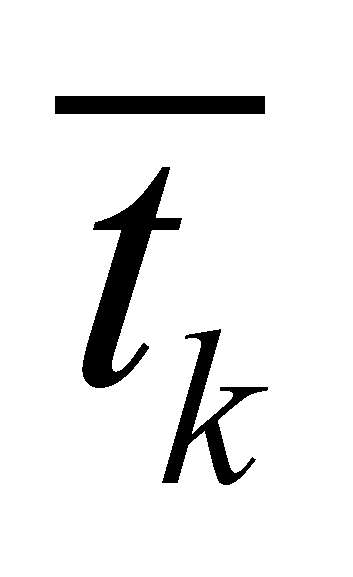

|
|
|
In case of any reference surface (not necessarily a plane one), for each point on that surface there is a normal and a plane which is perpendicular on that normal, that is the tangent plane Pt (see the figure X.15.2.1) which crosses through the normal’s application point (local T reference).
Fig. X.15. 2.1
By considering an
angular direction
 against the normal as a reference direction, FDV
of any flux which covers this surface has two vectorial components:
the common component with the normal
and the specific component against the normal
, both components complying with the following
relation:
against the normal as a reference direction, FDV
of any flux which covers this surface has two vectorial components:
the common component with the normal
and the specific component against the normal
, both components complying with the following
relation:
(X.15.2.1)
Because the two components are perpendicular one another (independent in terms of direction), namely, is included into the tangent plane, all the elements of the relation X.15.2.1 are coplanar. The two local (point wise) components of FDV are given by the functions C() and D() introduced in chapter 4, functions which provide the common and specific component of a vector against a reference direction:
(X.15.2.2)
(X.15.2.3)
Comment X.15.2.1: Here, there are two operators c and s which were introduced for avoiding the confusion with the operators which are already used into the vector calculus, and these are the scalar (dot) and vectorial product, whose formula are similar (c with the scalar and s with the vectorial product, but the results are quite different.
So far, we have presented the simple case when a single FDV runs through a point of the reference surface. Now, let us presume that there are N fluxes which run through that surface, they have a simultaneous existence and belong to a similar type, but they are originating from different sources placed at different spatial positions, and consequently they have different directions and intensities. By crossing the reference surface through the same point, that is the local T reference, all FDV of those N fluxes which cross through the same point shall make-up a “bunch” of concurrent vectors, therefore, a common component and N specific components may be determined for them, all of these specific components being included into the normal plane on the common component.
Comment X.15.2.2: Based on the statement that FDV and its two local components are coplanar vectors, this means that only the collinear common component is unique, all the N specific components being included into the tangent plane, but with different directions  ().
Here, there are two situations, depending on the type of the reference direction we choose for the set of N vectors:
Artificial reference, the above mentioned case, in which the reference direction (common component’s direction) is the normal’s direction. Taking into account this direction, we have:
(X.15.2.4)
(X.15.2.5)
Natural reference, that is the case when usually, the reference direction does not correspond with the normal’s direction, but it has an angular β direction (β is the angle between the natural and normal component in that point, which is determined into the plane who include the two vectors). The direction of the natural reference comes from its basic property, which asserts that the common component of the set of specific components is null (non-existent) against a natural reference, namely:
(X.15.2.6)
where the specific natural components are included into a perpendicular plane on the natural reference direction (not into the previous tangent plane), which plane runs also through the common application point of all the vectors (T local reference).
As for the artificial reference, the relation X.15.2.6 is not compulsory, on the contrary, we may have:
(X.15.2.7)
namely, the
sum of the specific (tangential) component belonging to the set of
the concurrent N FDV
vectors has a resultant which is different from zero, a component
which is common with the direction
 .
.
Comment X.15.2.3: If the reader has already read the chapter 7 in which the (de)composition processes of the fluxes deployed on the real bounding surfaces (RBS) of the material systems are presented, the case of a non-zero resultant for the specific components (tangential) of more fluxes may be translated through the existence of a tangential coherent component of the resultant flux, component which may have a non-zero circulation on RBS. And where a vector circulation exists, there is also a rotational distribution into the volume included into RBS (Stokes theorem).
Copyright © 2006-2011 Aurel Rusu. All rights reserved.